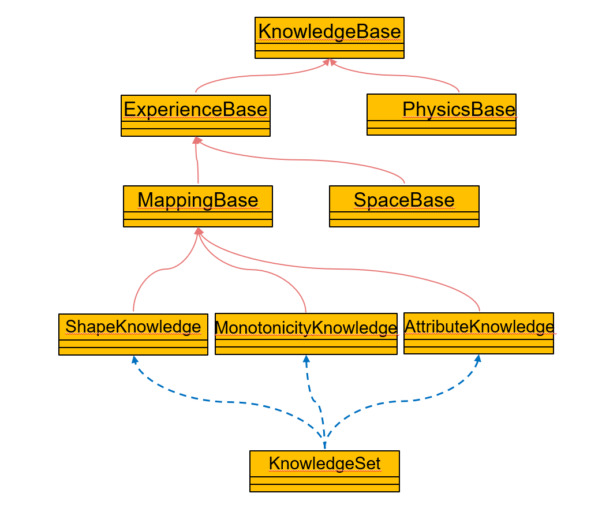
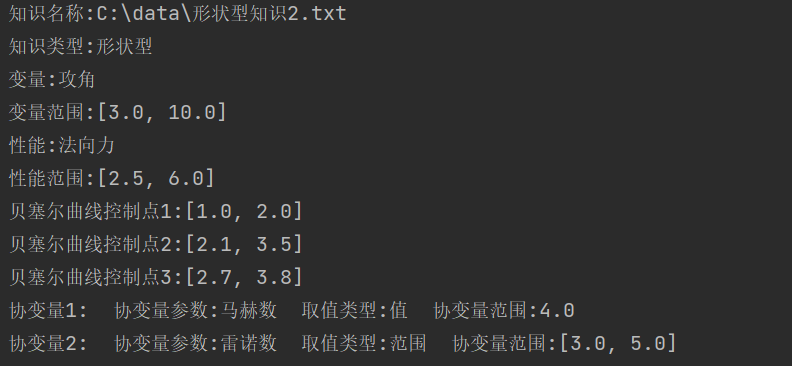

单条目知识
该部分的功能为对单条知识的操作，包括知识的读取、查看和新建。该部分的类图如下所示，代表着不同类型的知识。 KnowledgeBase为所有知识的基类，ExperienceBase为经验型知识（工程经验），PhysicsBase为物理知识，MappingBase和SpaceBase为工程经验中的映射型知识和空间型知识，ShapeKnowledge（形状型知识）、MonotonicityKnowledge（单调型知识）、AttributeKnowledge（属性型知识）则为映射型知识中的具体种类。
使用说明
KnowledgeBase中的属性
名称 |
类型 |
含义 |
|---|---|---|
path |
str |
储存知识文件的路径 |
True |
str |
知识的具体类型，如“形状型”、“单调型”等等 |
knowledge |
dict |
包含着所有知识信息的字典，可以用于后续的代理模型构建等操作 |
KnowledgeBase中的API
名称 |
作用 |
|---|---|
readKnowledge() |
将xml文件格式的知识读取为 dict格式 |
writeKnowledge() |
新建xml文件格式的知识 |
visualKnowledge() |
查看知识的具体内容 |
__init__(path)
构造函数，用于传入知识的xml文件路径，每次实例化雷的时候均会调用该方法。
参数：
path，类型为str，需要读取、查看或者新建知识的xml文件路径
示例：:
from knowledge import ShapeKnowledge
path = “C:\data\形状型知识2.txt”
know1 = ShapeKnowledge(path)
readKnowledge() → dict
读取路径为先前传入的path的xml格式的知识，将其转化为方便后续操作的dict格式
参数：None
返回：
knowledge，类型为dict，储存着知识所有信息的字典
示例：:
from knowledge import ShapeKnowledge
path = “C:\data\形状型知识2.txt”
know1 = ShapeKnowledge(path)
know_dict = know1.readKnowledge()
visualKnowledge() → None
查看路径为先前传入的path的xml格式知识的具体内容，使用该方法前需要首先运行readKnowledge()
示例：:
from knowledge import ShapeKnowledge
path = “C:\data\形状型知识2.txt”
know1 = ShapeKnowledge(path)
know_dict = know1.readKnowledge()
know1.visualKnowledge()
visualKnowledge()的运行结果如下图所示
writeKnowledge ( input_type, output_type, input_range , mapping_relation, convar) → None
创建xml格式的知识文件，将其储存在先前传入的path路径中
参数：
input_type，输入的参数名称，类型为list
output_type，输出的参数名称，类型为list
input_range，输入参数的范围，类型为list
mapping_relation，映射关系信息，类型为list
convar，协变量信息，类型为list
返回：None
示例：:
from knowledge import ShapeKnowledge
path = “C:\data\形状型知识2.txt”
know1 = ShapeKnowledge(path)
know_dict = know1.writeKnowledge(input_type=['攻角'],output_type=['法向力'],
input_range=[[3.0, 10.0]],
mapping_relation=['单调递增'],
convar=[{'convar_type': '马赫数', 'convar_RangeOrValue': 'value', 'convar_value': 4.0},
{'convar_type': '雷诺数', 'convar_RangeOrValue': 'range', 'convar_range': [3.0, 5.0]}])